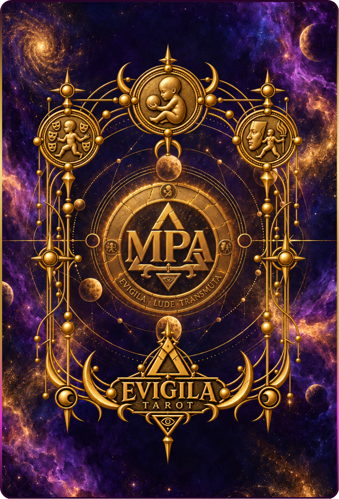

01 · Estudio
Leer el lenguaje
Conocé los Essentors, sus órdenes, sus tensiones y los símbolos que hacen que una carta pueda leerse de más de una manera.
Ver las leyendas ↓EVIGILA es una guía para aprender a leer símbolos, reconocer qué energía está actuando y llevar esa mirada a una tirada, una decisión o un momento de transformación.

La guía te acompaña antes, durante y después de una lectura: primero construís criterio; después probás cómo se mueve el símbolo en una situación concreta.
Conocé los Essentors, sus órdenes, sus tensiones y los símbolos que hacen que una carta pueda leerse de más de una manera.
Ver las leyendas ↓Elegí una carta, ubicála en una posición y observá qué cambia cuando cambia la pregunta. La interpretación se construye; no se recibe cerrada.
Abrir una tirada ↓Las órdenes no son categorías rígidas: son territorios para reconocer cómo una fuerza aparece, se transforma y vuelve a entrar en juego.
Las cartas confirmadas se cargan desde Drive, sin depender de Canva.
Una secuencia simple para practicar sin perder profundidad.
Describí el contexto, sin interpretarlo todavía.
Reconocé la energía que la carta pone en movimiento.
Elegí una acción pequeña que te permita verificar la lectura.
La tirada no decide por vos: te devuelve una forma más precisa de mirar.
Acá no estás haciendo una tirada todavía. Estás entrenando la mirada: tomás una carta del mazo y la llevás a una posición para aprender qué pregunta abre.
Arrastrá la carta hacia una de las tres posiciones. En celular también podés tocarla y elegir dónde dejarla.
Elegí una familia, observá las cartas y abrí una ficha de estudio. Cada ficha combina imagen, función, pregunta guía y una pequeña práctica para llevar el símbolo a tu situación.
Una tirada no repite cartas: combina fuerzas para que puedas leer qué fue, qué está siendo y qué posibilidad está buscando forma.
Las cartas pueden aparecer derechas o invertidas. No es premio ni castigo: es otra dirección de lectura.
La versión digital puede crecer con nuevas cartas, imágenes y capas de lectura sin perder la estructura del libro.
No trae mapa ni bandera. Es ese pulso entre el deseo de avanzar y el temor de caer. En una lectura puede representarte, desafiarte o mostrarte la energía que todavía no nombraste.
Una invitación a mirar qué está listo para cambiar de forma: una relación, una decisión, una práctica o una manera de contar la propia historia.
Primero observá. Después relacioná el símbolo con tu situación. Recién entonces construí una interpretación y elegí un experimento concreto para volver a la vida cotidiana.
EVIGILA puede acompañarte como mazo físico para consultar o como sistema completo de estudio y práctica.
Las cartas impresas y una guía pequeña para conocer cada familia, sus significados principales y las primeras tiradas.
Para empezar a leerEl mazo, el libro completo y acceso digital al aula EVIGILA: correspondencias, prácticas, tiradas y recorrido de aprendizaje.
Para profundizar y jugar✦ próximamente: muestras del mazo impreso y pedidos bajo demanda ✦
La guía te da un lenguaje para empezar. Una sesión personalizada permite trabajar tus preguntas, tus cartas y el contexto que no entra en una lectura general.